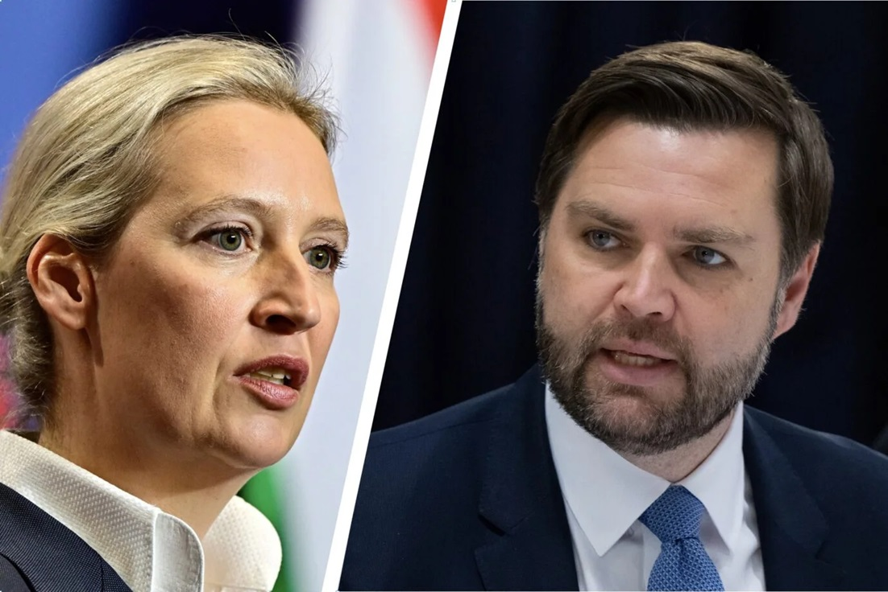

On Friday, February 14th, newly elected Vice President JD Vance made his first foreign trip. Starting in Paris, France meeting with French President Emmanuel Macron and attending the Artificial Intelligence Action Summit, Vance made his way to Germany on Friday. At the Munich Security Conference, JD Vance gave his first international speech. During the speech, Vance spoke about topics such as censorship and the Ukraine-Russia war.

"The threat that I worry the most about vis-à-vis Europe is not Russia, it's not China, it's not any other external actor. And what I worry about is the threat from within. Shutting down elections or shutting people out of the political process protects nothing." Vance stated.
Furthermore, Vance met with the four leaders of Germany's major political parties, including Musk-supported Alice Wiedel, leader of the far-right AfD, or Alternative for Germany. It is unclear what they spoke about. The Vice President also met with German President Frank-Walter Steinmeier and Chancellor Olaf Scholz earlier this week in Paris.
The Munich Security Conference ends on February 16th. Paper Tiger Media will keep on reporting and keep you updated.